Mediterranean Forests Countries Famous Places
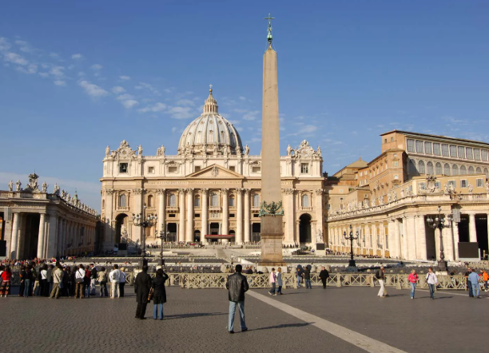
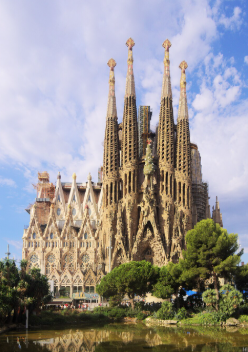
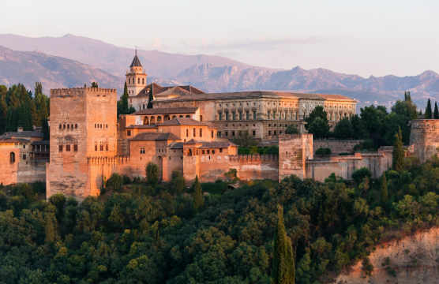
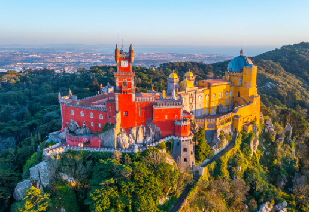
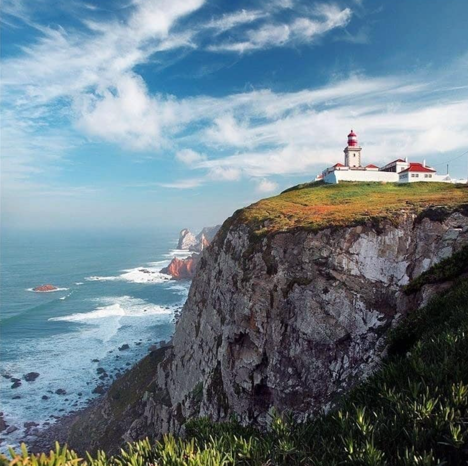
These are prime examples of places with Mediterranean forests and how that shaped them.
Places: The Vatican, Sagrada Familia, Alhambra, and Costa de Roca
The Central Northeastern United States
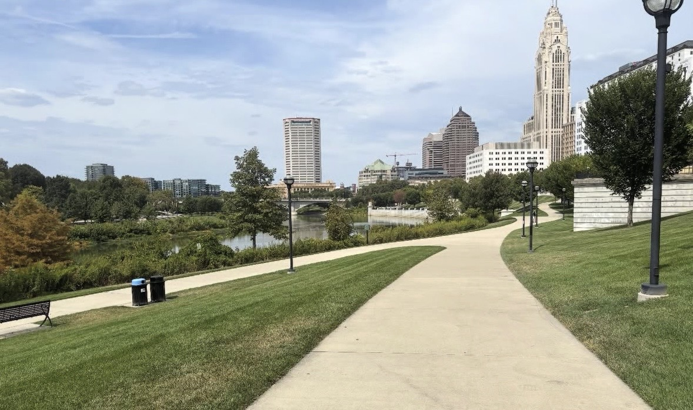
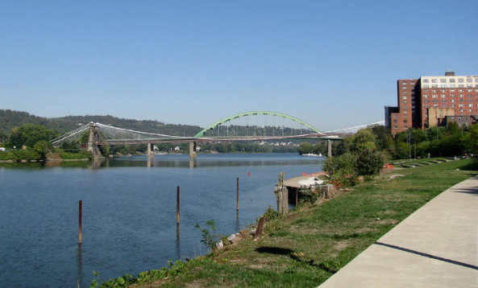
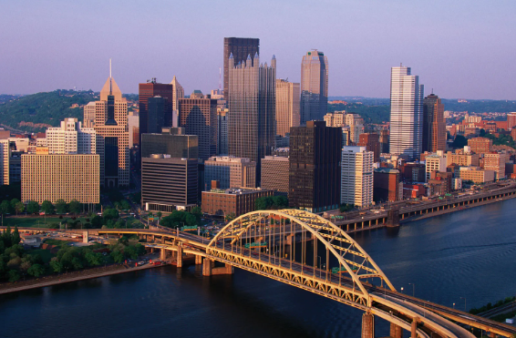
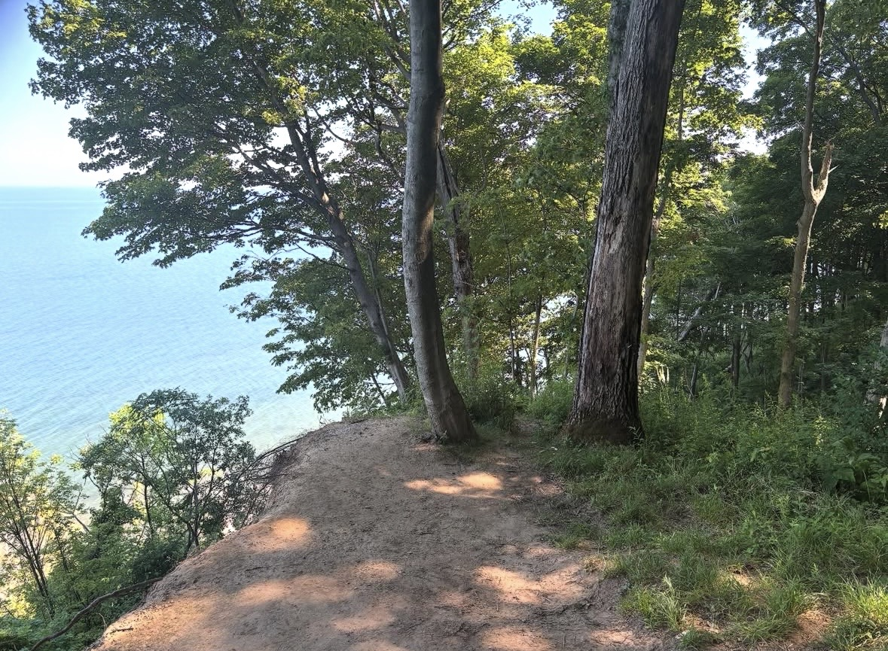
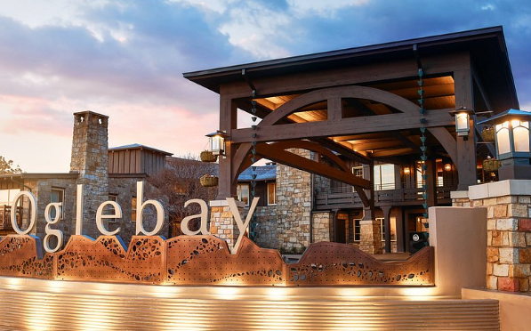
Cities that are included in the Central Northeast US Cities and beautiful nature.
This includes cities like Colombus Ohio, Pittsburgh Pennsylvania and Wheeling West Virgina
Places: Colombus Ohio, The Ohio River, Pittsburgh, Lake Erie Bluffs, and Oglebay Resort
Mexico
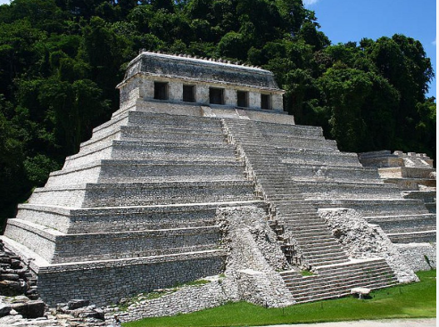
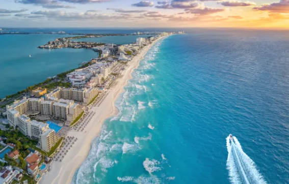
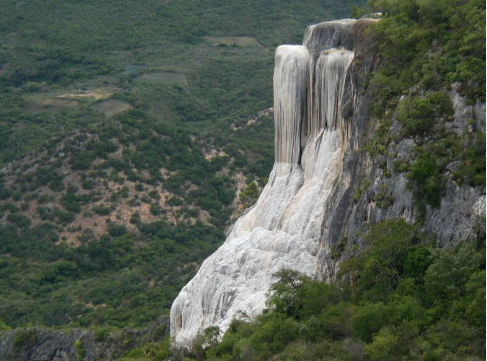
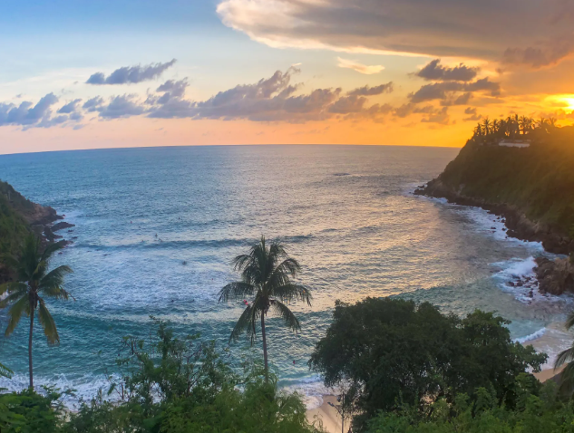
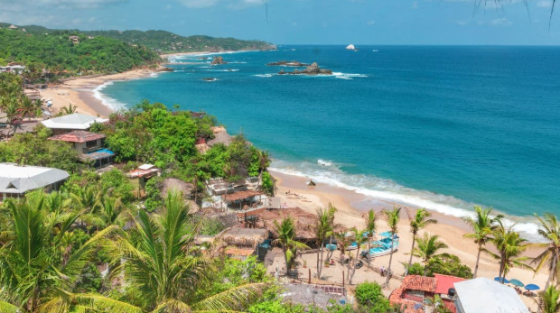
Southern Mexico is known for both ancient ruins and tropical beaches as well.
Places: Palenque, Cancun, Hierve el agua, Puerto Escondido and Mazunte
Morocco
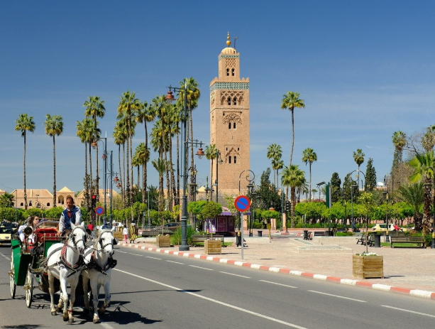
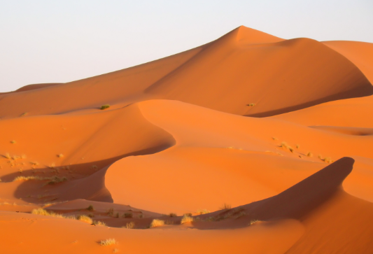
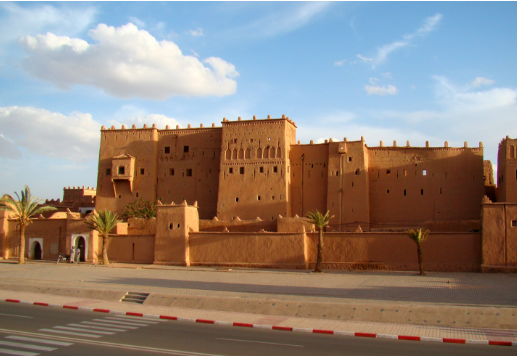
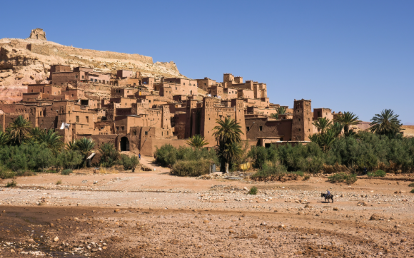
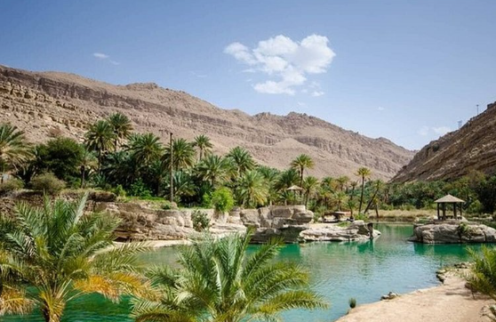
The Morocco desert is known for having nice desert landscapes.
Places: Marrakech, Erg Chebbi, Ouarzazate, Ait Benhaddou, Torda Gorge, Draa Valley
Norway
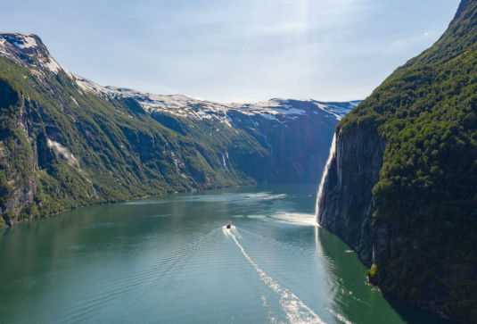
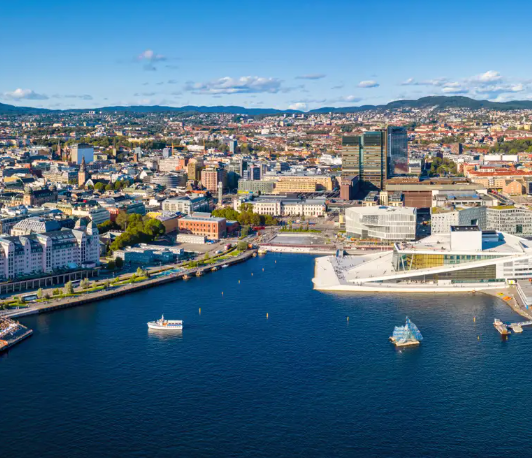
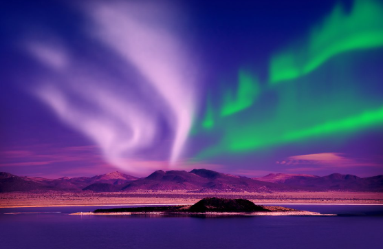

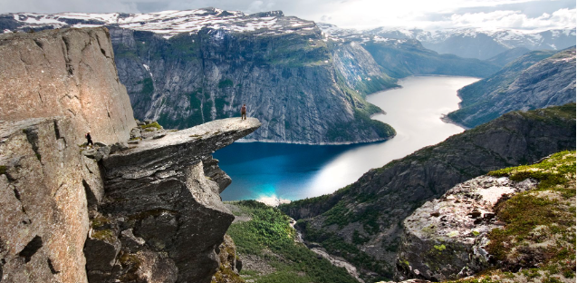
Norway is known for having beautiful fjords and great cities as well as mountains.
Places: Visit Geirangerfjord, Oslo, Northern Lights, Flåmsbana, Finnmarksvidda and Hardangerfjord